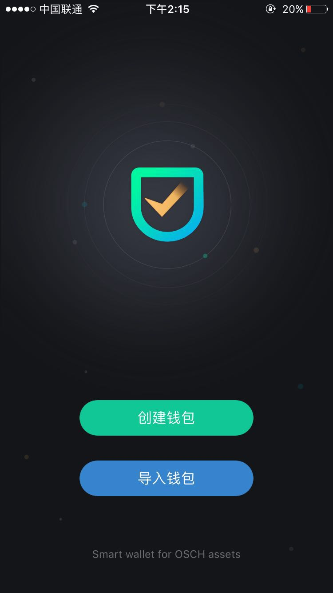
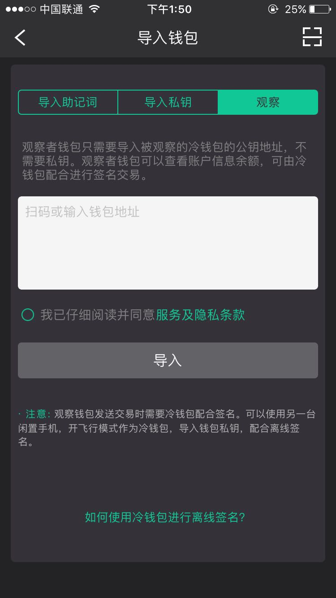
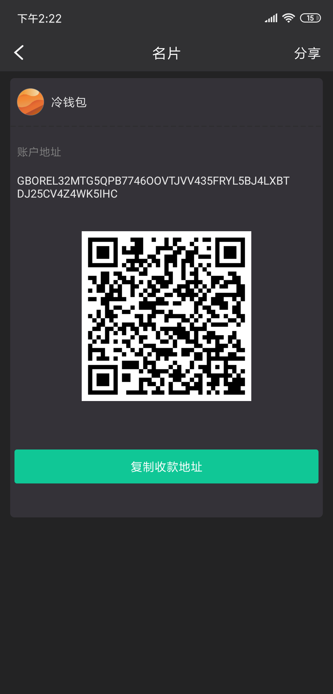
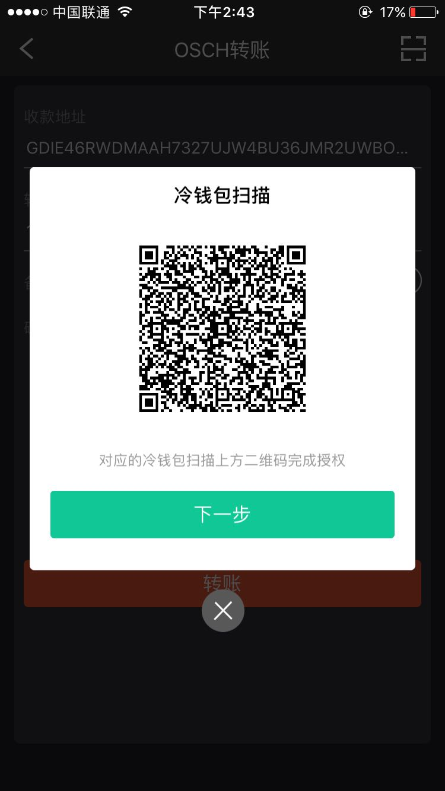
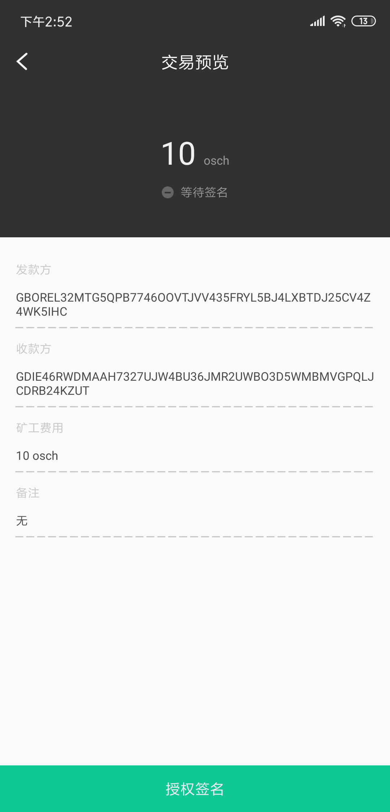
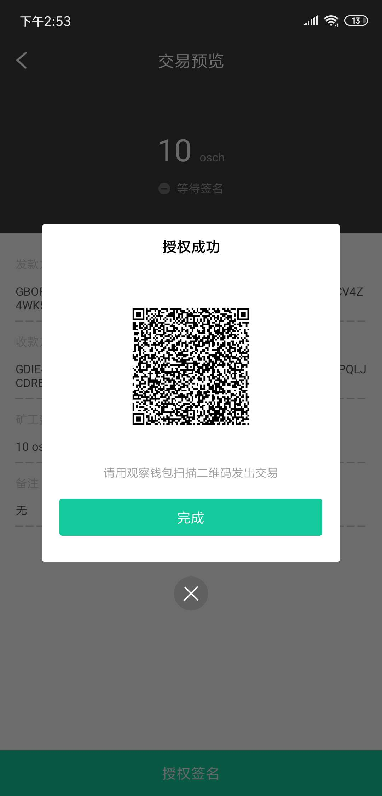

openwallet 作为专业数字资产钱包，安全放心、简单易用；
支持多链、多币种管理与兑换，让区块链技术更好地融入你的生活。
关于Open Source Chain开源链（OSCH）是第一个把电子行业的广义IP以智能合约的方法进行量化的平台。开源链平台对区块基础设施中性 （包括以太坊 ，星云链等），来构建电子行业的IP应用层。开源链平台用区块链技术驱动传统电子行业的技术开发流程、供应链、IP交易、媒体及网络社区的变革。 把电子行业IP定量化，让数字资产能够自我演化，自我增值，增强参与者信任，从而把价值回馈给所有开源链的参与者。
点击 “我” 中管理钱包 ——> 选择你自己创建的 HD 钱包（分层确定性钱包，使用 imToken 生成的即是这种类型的钱包） 导出助记词 ——> 输入钱包密码 备份助记词（按顺序记录）并点击 “下一步” ——> 按顺序输入你刚才备份的助记词用以二次确认 ——> 确认
注意：助记词移除之前一定要确保已经备份，移除之后，当前钱包已经没有助记词，但是用户可以通过导入助记词功能重新导入该钱包！
目前Open Wallet只支持单钱包，初次登入可以创建钱包或在删除原有钱包后可以创建新钱包
钱包名（必填）——> 密码（非常重要！这也是交易密码，如果遗忘则不能找回）——> 确认密码 ——> 创建钱包
点击 “我” ——> 管理钱包 ——> 导入钱包 ——> 私钥 ——> 将私钥粘贴进文本框内 / 扫描私钥二维码 ——> 用户自定义密码 （可以重置密码）——> 确认密码（非常重要！一定要记住密码）——> 开始导入
将助记词粘贴在文本框中 或 扫描助记词二维码（注意每个助记词之间以空格分隔）——> 用户自定义密码 ——> 确认密码（非常重要！一定要记住密码） ——> 开始导入
在资产列表页，点击你想转账的资产类型，如OSCH ——> 点击转账输入收款人地址（或者通过扫码） ——> 输入转账金额 ——> 输入转账的备注信息 ——> 确认转账注意 ： 转账的速度一般为5秒左右 输入交易密码（钱包密码） ——> 确认
收款方法一： 在 “资产” 页面，点击钱包地址 ——> 填写收款金额
方法二： 在 “资产” 页面，点击你想收款的资产类型，如Osch ———> 点击收款按钮
重要提示：删除钱包之前一定要确认是否备份该钱包，如果你没有备份，删除之后，再也无法还原该钱包！
删除操作:
点击 “我” 中管理钱包 ——> 进入你想删除的钱包
删除钱包 ——> 输入钱包密码 ——> 确认即可删除
openwallet 目前只从Binance、P网、kraken、Coinbase、Bittrex 这五个交易所中获取价格, 如果你发现这个五个交易所中有的 Token, 在 openwallet 中没有价格显示, 可以发送工单到 support@consenlabs.com 联系我们。
- 1.两部没有 Root 刷机过，你认为非常安全的手机
- 2.两部手机都从官网下载最新的钱包openwallet
- 3. 将其中一部手机关闭 Wifi，并开启飞行模式，作为冷钱包。这部手机一定要断网, 因为是存有你私钥的设备
设置观察钱包：
如果你想使用冷钱包功能，首先要观察该钱包。
注: 使用你的联网手机是热钱包，用来观察钱包，未联网手机作为冷钱包用作离线签名授权
第一步 热钱包: 点击 “导入钱包” -> 选择第三项 “观察” -> 点击右上角的扫描按钮，扫描第 二 步钱包地址的二维码
 第二步 冷钱包：选择你想观察钱包的公钥二维码，如图
第三步 热钱包： 接着第一步操作，扫码未联网地址二维码->点击同意服务隐私条款->点击导入->成功导入

冷钱包交易签名
我们使用osch转账为例子
第一步 热钱包：第 1 步 热钱包: 进入 OSCH 转账界面, 输入转账信息 -> 下一步 -> 生成 “冷钱包扫描” 二维码
第 二 步 冷钱包: 使用 openwallet 内的 “扫一扫” 功能扫描第 1 步生成的 ”冷钱包扫描” 二维码 -> 点击 “授权签名” -> 输入密码 -> 生成”签名成功” 的二维码
 第 三 步 热钱包: 点击第 1 步中 ”冷钱包扫描” 页面的 “下一步” 按钮 -> 点击 “扫描冷钱包签名数据” 二维码 -> 扫描第 2 步冷钱包生成的 “签名成功” 的二维码 -> 发送交易 -> 完成交易